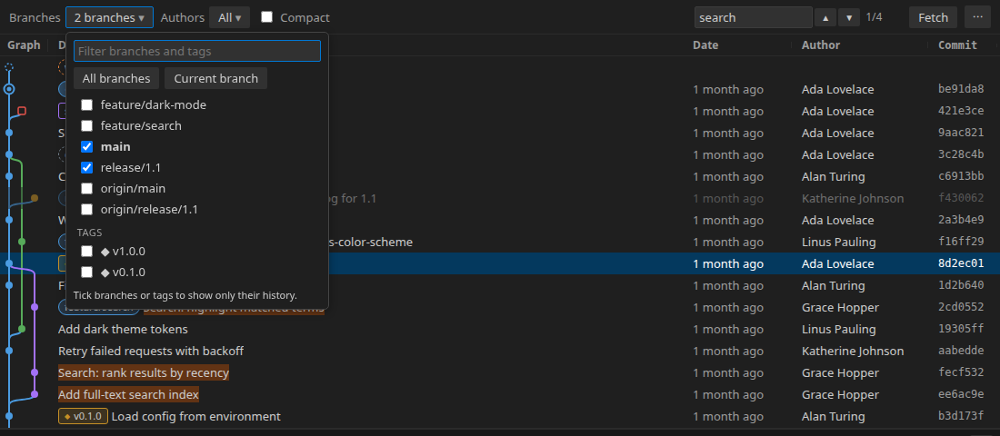

List the commits between two tags
You are writing release notes for v1.1 and need everything that went in since v1.0. A tag is a fixed name for one commit, so “between two tags” is an ordinary git range. This guide covers git log with two dots and three, leaving out merge commits, one line per merged branch, commits grouped by author, the files that changed, “everything since the last release”, a changelog in one command, and what a git graph in VS Code can show you.
- Quick answers
- The example repository
- Two dots:
v1.0..v1.1 - Merge commits:
--no-mergesand--first-parent - Three dots: both sides
- Grouped by author:
git shortlog - Which files changed:
git diff - Since the last release
- A changelog in one command
- Compare two ranges:
git range-diff - In the Mergeline graph
- FAQ
Quick answers
| I want to… | Run |
|---|---|
Commits in v1.1 that are not in v1.0 | git log v1.0..v1.1 --oneline |
| The same without merge commits | git log v1.0..v1.1 --oneline --no-merges |
| One line per merged branch or pull request | git log v1.0..v1.1 --oneline --first-parent |
| How many commits | git rev-list --count v1.0..v1.1 |
| Grouped by author | git shortlog v1.0..v1.1 |
| The files that changed | git diff --stat v1.0 v1.1 |
| Everything since the last tag | git log $(git describe --tags --abbrev=0)..HEAD --oneline |
| A Markdown changelog | git log v1.0..v1.1 --no-merges --pretty=format:'- %s (%h)' |
We ran every command on this page with git 2.53.0 in a throwaway repository and quote the output we got.
The example repository
Between v1.0 and v1.1, two feature branches were merged into main with merge commits, and two commits went straight onto main. After v1.1, a fix on main was cherry-picked onto release/1.1 and tagged v1.1.1; main carried on to v1.2. Three people committed: Ann Lee, Bob Ray and Cleo Park.
git log --oneline --graph --decorate v1.2 v1.1.1 * 6ecc338 (tag: v1.2) Add wishlist * 33ef012 Speed up order list * 6e9f3f2 Log failed payments * 9c87c13 Fix rounding in cart total * a8aa046 Add order history page | * 81f8e24 (tag: v1.1.1, origin/release/1.1, release/1.1) Fix rounding in cart total |/ * 931e6db (tag: v1.1) Update README * 2587c3a Merge branch 'feature/shipping' |\ | * a1229a3 Add shipping options |/ * aecc87c Show prices with two decimals * 31b22d9 Merge branch 'feature/coupons' |\ | * 513eee8 Validate coupon codes | * 14a6cfc Add coupon field |/ * 46a18bd (tag: v1.0) Add checkout form * 3e72ed7 Initial cart page
Two dots: v1.0..v1.1
A..B means “commits you can reach from B but not from A”. For two releases on the same line, that is exactly what the newer one added:
git log v1.0..v1.1 --oneline 931e6db Update README 2587c3a Merge branch 'feature/shipping' a1229a3 Add shipping options aecc87c Show prices with two decimals 31b22d9 Merge branch 'feature/coupons' 513eee8 Validate coupon codes 14a6cfc Add coupon field git rev-list --count v1.0..v1.1 7
- The commit tagged
v1.0is not in the list; the one taggedv1.1is. The range starts after the old tag and ends at the new one. - Order matters.
git log v1.1..v1.0printed nothing, because everything inv1.0is already inv1.1. If you get an empty list, check that you put the older tag first. - Newest commits come first. Add
--reverseto read them in the order they were made. - Add a path to see only commits that touched it:
git log v1.0..v1.1 --oneline -- cart.jsprinted justaecc87c Show prices with two decimals.
Merge commits: --no-merges and --first-parent
The list above mixes the work with the merges that brought it in. Which to keep depends on how your team merges.
git log v1.0..v1.1 --oneline --no-merges 931e6db Update README a1229a3 Add shipping options aecc87c Show prices with two decimals 513eee8 Validate coupon codes 14a6cfc Add coupon field git log v1.0..v1.1 --oneline --first-parent 931e6db Update README 2587c3a Merge branch 'feature/shipping' aecc87c Show prices with two decimals 31b22d9 Merge branch 'feature/coupons'
--no-mergesdrops the merge commits and keeps every commit inside the branches. Use it when each commit is a meaningful change.--first-parentfollows only the main line: each merged branch shows up as its one merge commit, and the commits inside it are hidden. When every change arrives as a pull request with a merge commit, this is one line per pull request. The first-parent guide explains why.--mergeskeeps only the merge commits: here2587c3aand31b22d9.
If your team squash-merges or rebases, there are no merge commits and the plain list is already one line per change.
Three dots: both sides
Two dots answer “what is new in the second tag”. That is only the full story when the second tag grew from the first. v1.1.1 and v1.2 went separate ways after v1.1, so each has commits the other lacks:
git log v1.1.1..v1.2 --oneline 6ecc338 Add wishlist 33ef012 Speed up order list 6e9f3f2 Log failed payments 9c87c13 Fix rounding in cart total a8aa046 Add order history page git log v1.2..v1.1.1 --oneline 81f8e24 Fix rounding in cart total
Three dots, A...B, give both sides at once: the commits in either tag but not in both. Add --left-right to mark which side each one is on (< for the left tag, > for the right), and --cherry-pick to hide changes that exist on both sides under different hashes:
git log v1.1.1...v1.2 --oneline --left-right > 6ecc338 Add wishlist < 81f8e24 Fix rounding in cart total > 33ef012 Speed up order list > 6e9f3f2 Log failed payments > 9c87c13 Fix rounding in cart total > a8aa046 Add order history page git log v1.1.1...v1.2 --oneline --left-right --cherry-pick > 6ecc338 Add wishlist > 33ef012 Speed up order list > 6e9f3f2 Log failed payments > a8aa046 Add order history page
The last list is what someone upgrading from v1.1.1 to v1.2 gets that they did not already have: the rounding fix is gone from it because v1.1.1 had its own copy. To find which releases have a given commit, see which branches and tags contain a commit.
Grouped by author: git shortlog
git shortlog v1.0..v1.1 Ann Lee (4): Merge branch 'feature/coupons' Show prices with two decimals Merge branch 'feature/shipping' Update README Bob Ray (2): Add coupon field Validate coupon codes Cleo Park (1): Add shipping options git shortlog -sn --no-merges v1.0..v1.1 2 Ann Lee 2 Bob Ray 1 Cleo Park
Each author’s commits are listed oldest first. -s prints only the counts, -n sorts by count, and --no-merges stops merge commits counting as work, which is why Ann Lee went from 4 to 2. For a “thanks to” line in release notes, that last command is all you need. If one person appears under two names, a .mailmap file joins them; see git log by author.
Which files changed: git diff
git log lists commits; git diff compares the two snapshots. Give it the two tags with a space:
git diff --stat v1.0 v1.1 README.md | 1 + cart.js | 1 + coupons.js | 2 ++ shipping.js | 1 + 4 files changed, 5 insertions(+) git diff --name-status v1.0 v1.1 A README.md M cart.js A coupons.js A shipping.js
A is added, M modified, D deleted, R renamed. --shortstat prints only the last line. Without an option, git diff v1.0 v1.1 prints the full change, and git diff v1.0 v1.1 -- cart.js limits it to one file.
Careful with dots here: for git diff, v1.0..v1.1 means the same as the space, and v1.0...v1.1 means “what v1.1 changed since the two split”, not the three-dot set of commits from git log. The compare branches guide covers the difference.
Since the last release
git describe --tags --abbrev=0 prints the nearest tag behind the current commit. Use it as the start of the range:
git describe --tags --abbrev=0 v1.10 git log $(git describe --tags --abbrev=0)..HEAD --oneline 87d72c4 Start dark mode
- Keep
--tags. Without it,git describeonly uses annotated tags. Ourv1.2is a lightweight tag:git describe --abbrev=0 v1.2answeredv1.1, andgit describe --tags --abbrev=0 v1.2answeredv1.2. - The release before a tag: start from its parent.
git describe --tags --abbrev=0 v1.10^printedv1.9, sogit log v1.9..v1.10is the notes forv1.10. - It follows history, not dates. On
release/1.1it answersv1.1.1, the last tag on that branch, even thoughv1.10is newer. - All tags, newest first:
git tag --sort=-creatordate(by date) orgit tag --sort=-v:refname(by version number).
A changelog in one command
--pretty=format: takes placeholders: %s is the subject, %h the short hash, %an the author name. This prints a Markdown list:
git log v1.0..v1.1 --no-merges --pretty=format:'- %s (%h)' - Update README (931e6db) - Add shipping options (a1229a3) - Show prices with two decimals (aecc87c) - Validate coupon codes (513eee8) - Add coupon field (14a6cfc) git log v1.0..v1.1 --no-merges --reverse --pretty=format:'- %s (%h, %an)' - Add coupon field (14a6cfc, Bob Ray) - Validate coupon codes (513eee8, Bob Ray) - Show prices with two decimals (aecc87c, Ann Lee) - Add shipping options (a1229a3, Cleo Park) - Update README (931e6db, Ann Lee)
Add > CHANGES.md to write it to a file. For a merge-based workflow, swap --no-merges for --first-parent to get one line per merge. Look at your merge messages first: if the subject is only “Merge pull request #12 from …” and the title is on the lines below, use %b (the body) instead of %s. A list of subjects is a draft, not finished release notes: it still needs grouping, and “Update README” probably does not belong in it.
Compare two ranges: git range-diff
git range-diff compares two lists of commits and pairs up the ones that make the same change. Here it compares what v1.1.1 and v1.2 each added on top of v1.1:
git range-diff v1.1..v1.1.1 v1.1..v1.2 -: ------- > 1: a8aa046 Add order history page 1: 81f8e24 ! 2: 9c87c13 Fix rounding in cart total @@ Metadata ## Commit message ## Fix rounding in cart total - (cherry picked from commit 9c87c1376aab0e1fcfad275b359035a8a15f2ea9) - ## cart.js ## @@ Initial cart page -: ------- > 3: 6e9f3f2 Log failed payments -: ------- > 4: 33ef012 Speed up order list -: ------- > 5: 6ecc338 Add wishlist
-: ------- > marks a commit only in the second range. 1: 81f8e24 ! 2: 9c87c13 pairs the two copies of the fix; ! means they differ, and the lines below show how: only the “cherry picked from” line, the code is the same. = would mean identical. It is meant for comparing two versions of a rebased branch, but it is also a quick check that a release branch got the same fixes as main.
In the Mergeline graph
Mergeline is a free, MIT-licensed git graph for VS Code, Cursor and VSCodium. It does not write release notes or list a range as text; use the commands above for that. What it gives you is the picture: where the tags are, what each commit changed, and what changed between two releases.
- Show only one release’s history (new in 0.20). The toolbar’s Branches filter lists your tags under a Tags heading, highest version first; the first 50 are shown, and you can type to find others. Tick
v1.1and the graph shows only its history, likegit log v1.1. The button then reads ◆ v1.1. Tick a second tag to see both releases’ history together. - Compare two tags. Click the commit with one tag’s badge, then Ctrl-click (Cmd-click on macOS) the commit with the other. The details pane lists every file that differs between them, with lines added and removed, like
git diff --stat v1.0 v1.1. - Read a change. Click a file in that list to open it in VS Code’s own diff editor.
- Keep it. Save this diff as a patch… in the comparison writes the whole change to one file, the same as
git diff --binary. - Check a commit’s releases (new in 0.20). Select any commit: the Contained in line in its details names the first tag that has it and lists the others. See which branches and tags contain a commit.

Mergeline is not on the VS Code Marketplace yet. Download the .vsix from GitHub and run Extensions: Install from VSIX… (full steps).
FAQ
Is the first tag included in git log v1.0..v1.1?
No. The commit tagged v1.0 and everything before it are left out; the commit tagged v1.1 is included. That is what you want for release notes: v1.0’s own commit was already in the previous release.
Why is my list empty?
Usually the tags are the wrong way round: git log v1.1..v1.0 is empty because v1.0 has nothing v1.1 lacks. Put the older tag first. Also check that you have the tags locally: git fetch --tags.
Two dots or three?
Two dots when the new release grew from the old one, which is the normal case on one branch. Three dots with --left-right when the two tags are on different branches, such as a patch release on a release branch and the next minor release on main.
How do I list the commits between two tags on GitHub?
Open https://github.com/<owner>/<repo>/compare/v1.0...v1.1. The compare page has a Commits tab and a Files changed tab. Locally, git log v1.0..v1.1 gives you the same commits as text you can paste.
Related: which branches and tags contain a commit, compare branches and commits, git log --first-parent and git log by author.